Modellunternehmen für den BwR-Unterricht – Arbeitsheft mit Lösungen (BwR 8, Realschule Bayern)
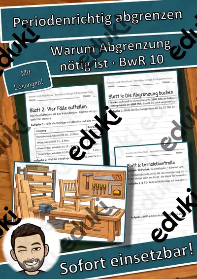
Periodenrichtig abgrenzen – Arbeitsheft mit Lösungen (BwR 10, Realschule Bayern)
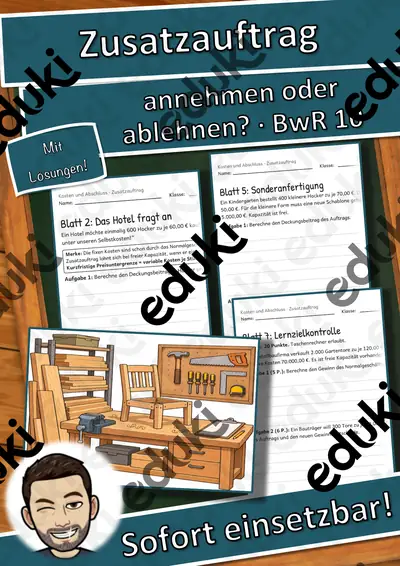
Zusatzauftrag – Arbeitsheft mit Lösungen (BwR 10, Realschule Bayern)

Teilkostenrechnung: Einstieg – Arbeitsheft mit Lösungen (BwR 10, Realschule Bayern)

Taktarten Lückentext mit Wortspeicher Hörverstehen und Suchsel

Suchauftrag Lückentext mit Wortspeicher Hörverstehen und Suchsel

LF 3 Industriekaufleute: Lieferantenauswahl und Qualitätskontrolle – Übungen, Lösungen + Lernvideo

Zwei Produkte im Vergleich – Arbeitsheft mit Lösungen (BwR 10, Realschule Bayern)
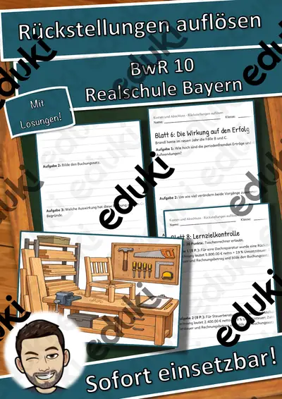
Rückstellungen auflösen – Arbeitsheft mit Lösungen (BwR 10, Realschule Bayern)

Der Jahresabschluss – Arbeitsheft mit Lösungen (BwR 10, Realschule Bayern)

Stimmlage Lückentext mit Wortspeicher Hörverstehen und Suchsel

Materialpaket Wort-Bild-Karten Grundschule Klasse 1–4 – Tiere und Natur: 7 Themen, mit Lösungsseite

Materialpaket Wort-Bild-Karten Grundschule Klasse 1–4 – Orte und Umwelt: 3 Themen, mit Lösungsseite

Materialpaket Wortgitter Grundschule Klasse 1–4 – Jahreszeiten und Feste: 5 Themen, dreifach differenziert, mit Lösungen
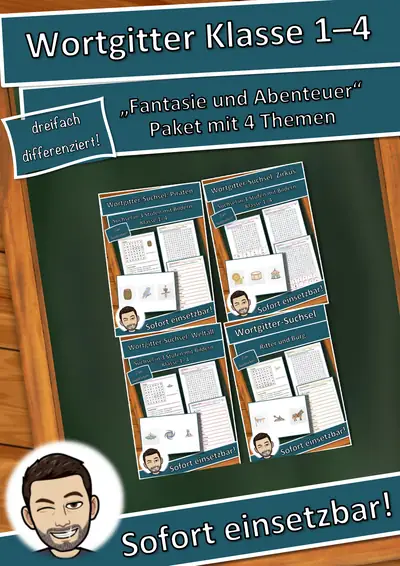
Materialpaket Wortgitter Grundschule Klasse 1–4 – Fantasie und Abenteuer: 4 Themen, dreifach differenziert, mit Lösungen

Materialpaket Wortgitter Grundschule Klasse 1–4 – Orte und Umwelt: 3 Themen, dreifach differenziert, mit Lösungen

Materialpaket Wortgitter Grundschule Klasse 1–4 – Tiere und Natur: 7 Themen, dreifach differenziert, mit Lösungen

Bilanz und GuV aufbereiten – Arbeitsheft mit Lösungen (BwR 10, Realschule Bayern)

Zahlen übernehmen – Arbeitsheft mit Lösungen (BwR 10, Realschule Bayern)

Zinsen im Kredit – Arbeitsheft mit Lösungen (BwR 9, Realschule Bayern)

Stellungnahme Lückentext mit Wortspeicher Hörverstehen und Suchsel

Sonderzeichen Lückentext mit Wortspeicher Hörverstehen und Suchsel
LF 12 Anlagenmechaniker/-in SHK: Pufferspeicher und Anlagenhydraulik – Übungen, Lösungen + Lernvideo
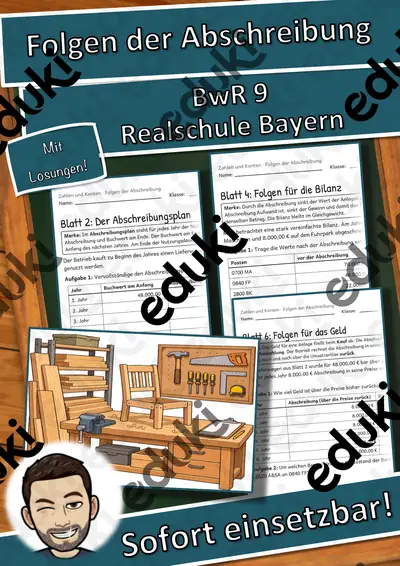
Folgen der Abschreibung – Arbeitsheft mit Lösungen (BwR 9, Realschule Bayern)

Forderungen im Geschäftsjahr – Arbeitsheft mit Lösungen (BwR 9, Realschule Bayern)
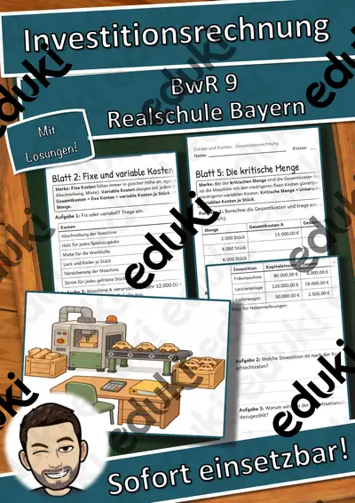
Investitionsrechnung – Arbeitsheft mit Lösungen (BwR 9, Realschule Bayern)

Sinfonische Dichtung Lückentext mit Wortspeicher Hörverstehen und Suchsel

Aufbau der Bilanz – Arbeitsheft mit Lösungen (BwR 7, Realschule Bayern)
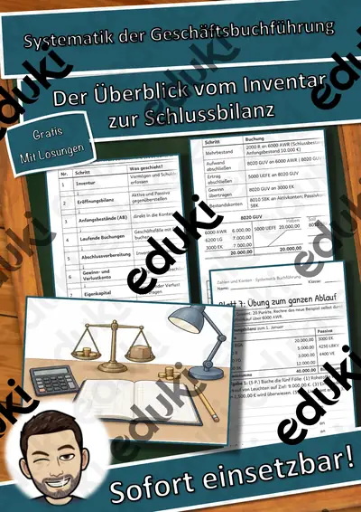
Systematik der Geschäftsbuchführung – Arbeitsheft mit Lösungen (BwR 8, Realschule Bayern)
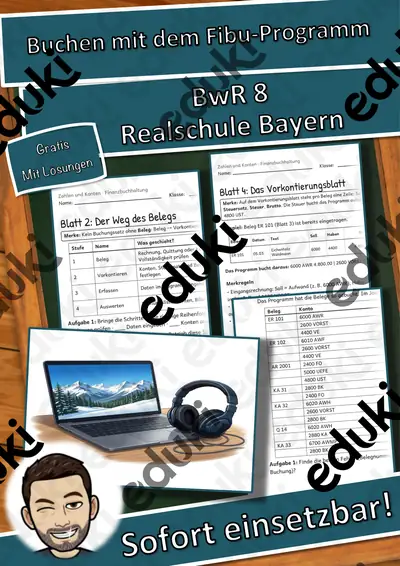
Buchen mit dem Finanzbuchhaltungsprogramm – Arbeitsheft mit Lösungen (BwR 8, Realschule Bayern)

Ein Geschäftsjahr im Fertigungsunternehmen – Übungsreihe Teil 1 – Arbeitsheft mit Lösungen (BwR 8)

Geld anlegen – Arbeitsheft mit Lösungen (BwR 9, Realschule Bayern)

Kreditgeschäfte buchen – Arbeitsheft mit Lösungen (BwR 9, Realschule Bayern)
Simultankontrast Lückentext mit Wortspeicher Hörverstehen und Suchsel
Schulgottesdienst Lückentext mit Wortspeicher Hörverstehen und Suchsel
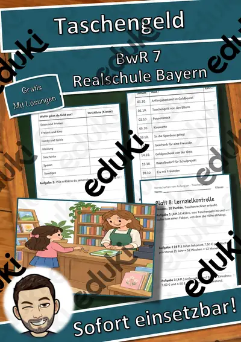
Taschengeld – Arbeitsheft mit Lösungen (BwR 7, Realschule Bayern)
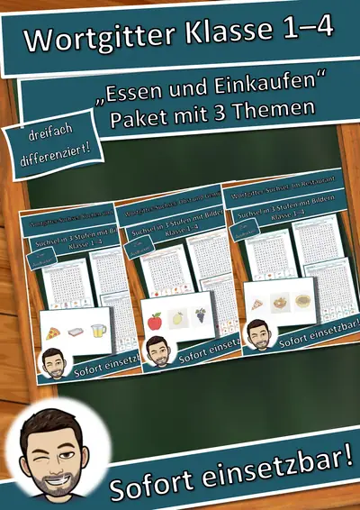
Materialpaket Wortgitter Grundschule Klasse 1–4 – Essen und Einkaufen: 3 Themen, dreifach differenziert, mit Lösungen
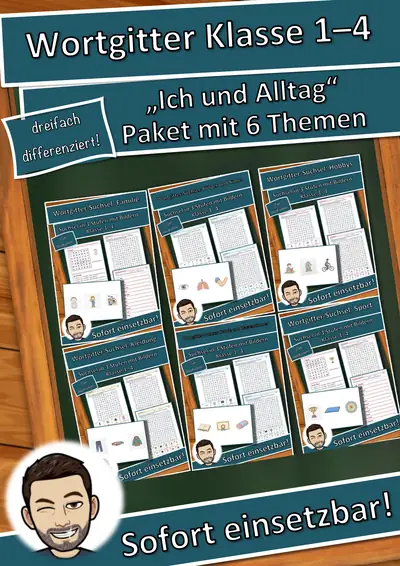
Materialpaket Wortgitter Grundschule Klasse 1–4 – Ich und Alltag: 6 Themen, dreifach differenziert, mit Lösungen

Materialpaket Sprechanlässe Grundschule Klasse 1–4 – Orte und Umwelt: 3 Themen, dreifach differenziert, mit Musterantworten

Materialpaket Sprechanlässe Grundschule Klasse 1–4 – Essen und Einkaufen: 3 Themen, dreifach differenziert, mit Musterantworten
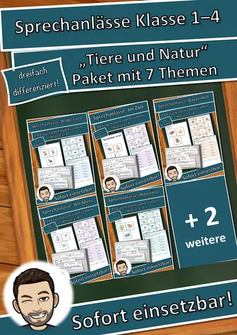
Materialpaket Sprechanlässe Grundschule Klasse 1–4 – Tiere und Natur: 7 Themen, dreifach differenziert, mit Musterantworten

Materialpaket Sprechanlässe Grundschule Klasse 1–4 – Jahreszeiten und Feste: 5 Themen, dreifach differenziert, mit Musterantworten

Materialpaket Sprechanlässe Grundschule Klasse 1–4 – Fantasie und Abenteuer: 5 Themen, dreifach differenziert, mit Musterantworten

Materialpaket Sprechanlässe Grundschule Klasse 1–4 – Ich und Alltag: 6 Themen, dreifach differenziert, mit Musterantworten

Materialpaket Klammerkarten Grundschule Klasse 1–4 – Essen und Einkaufen: 5 Themen, dreifach differenziert, mit Lösungen

Materialpaket Klammerkarten Grundschule Klasse 1–4 – Orte und Umwelt: 4 Themen, dreifach differenziert, mit Lösungen

Materialpaket Klammerkarten Grundschule Klasse 1–4 – Jahreszeiten und Feste: 4 Themen, dreifach differenziert, mit Lösungen

Materialpaket Klammerkarten Grundschule Klasse 1–4 – Ich und Alltag: 7 Themen, dreifach differenziert, mit Lösungen
Keine Materialien gefunden – versuch einen anderen Suchbegriff oder Filter.